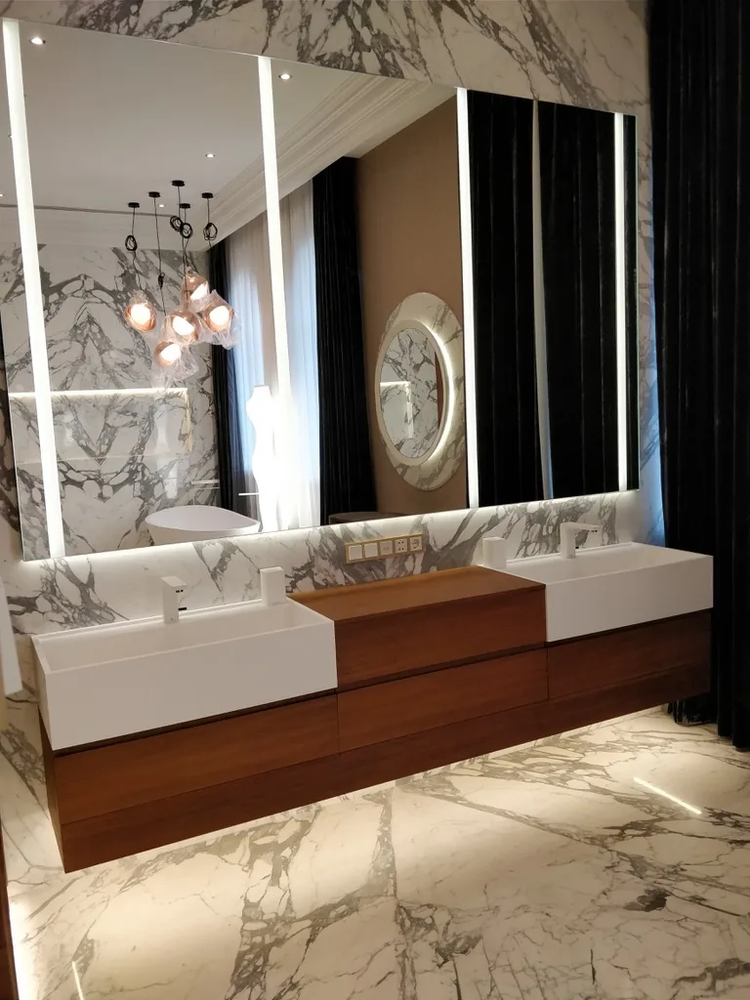

Rozprowadzenie instalacji wody
Przewody zimnej i ciepłej wody, podejścia do kuchni, łazienek i urządzeń.
Projektujemy i wykonujemy instalacje wodne i kanalizacyjne w domach oraz mieszkaniach, dbając o funkcjonalny układ przewodów, dostęp serwisowy i współpracę z innymi instalacjami.

Dobre prowadzenie przewodów pozwala uniknąć kolizji z konstrukcją i innymi branżami. Ważne są między innymi punkty poboru wody, rozmieszczenie przyborów, dostęp do zaworów oraz odpowiednie spadki kanalizacji.
Dobór materiałów i technologii uzgadniamy z zakresem inwestycji, uwzględniając także przygotowanie ciepłej wody użytkowej.
Przewody zimnej i ciepłej wody, podejścia do kuchni, łazienek i urządzeń.
Układ tras odpływów i pionów dopasowany do rozmieszczenia przyborów.
Zawory, rozdzielacze i elementy techniczne zapewniające wygodną obsługę.
Dobór filtrów i innych urządzeń do rzeczywistych potrzeb oraz parametrów wody.
Przygotowaliśmy krótkie odpowiedzi na pytania, które pojawiają się przed rozpoczęciem prac.
Przed wykonaniem instalacji, najlepiej po ustaleniu układu kuchni, łazienek i pomieszczenia technicznego.
Tak. Dobór urządzeń uzależniamy od potrzeb użytkowników i wyników analizy parametrów wody.
Tak. Koordynacja tych instalacji upraszcza prowadzenie przewodów oraz organizację prac na budowie.
Opisz, czy chodzi o nowy budynek, mieszkanie czy modernizację. Wystarczy kilka informacji, żeby rozpocząć rozmowę.